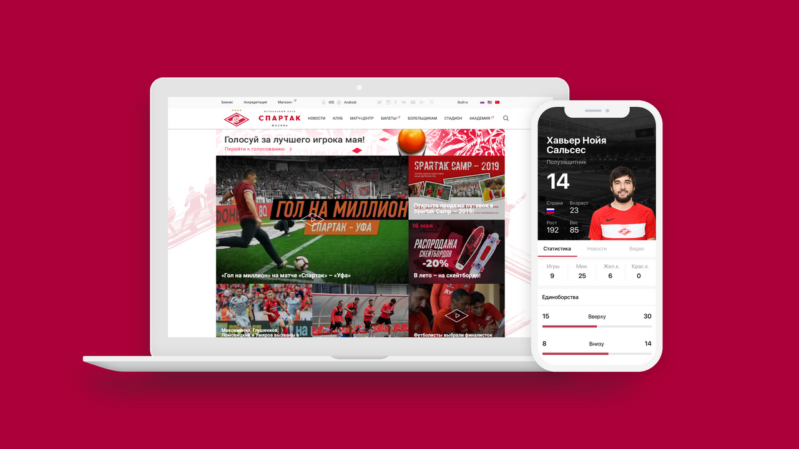

ФК Спартак
Новые каналы коммуникации для самого популярного
футбольного клуба
России.

Дизайн
Дизайн Приложение должно быть простым в использовании, а на небольшом экране логично делать акцент на содержании. Мы создали дизайн основываясь на эмоциях болельщиков, к примеру, придумали набор выразительных иконок, в основу которых лег спартаковский ромб.
Новости
Все самое интересное от пресс-службы. В разделе доступны интервью с членами команды, фото- и видео-отчеты о событиях внутри клуба, трансферные новости и детали сезонной подготовки команды.


Магазин
Мы сделали в приложении полностью нативный интернет-магазин со всей аттрибутикой Спартака. Магазин интегрирован с 1C на котором работает сайт клуба — работники «Спартака» могут управлять ими из одной «админки».


Команда
В разделе показывается подробная статистика о каждом футболисте, статистика и показатели, лучшие моменты с матчей конкретного игрока.
Билеты
Мы сделали нативный раздел продажи билетов. Внутри список мероприятий, история заказов, интеграция с программой лояльности и CRM Спартака, а также интерактивные и вручную нарисованные карты стадиона.


Заказ еды
Теперь «красно-белые» могут заказывать еду себе на стадион. Мы сделали полноценный раздел доставки, интегрировали систему оплаты, добавили историю заказов и чат со службой поддержки.


Награды
Первое место в категории Спорт в AppStore
Серебро в номинации «СМИ и контент». Рейтинг Рунета 2017
Золото в номинации «Народное голосование». Tagline Awards 2017
Серебро в номинации «Лучший мобильный сервис». Tagline Awards 2017
Золото в номинации «СМИ». Tagline Awards 2017
Золото в номинации «Лучшее мобильное приложение». Marspo Awards 2017
Золото в номинации «Лучшее инновационное решение по работе с болельщиками». Sport Innovations 2018
Серебро в номинации «Лучшее мобильное приложение для спорта». Sport Innovations 2018

Меня зовут Дмитрий Хайретдинов, я один из соучредителей в FINCH. Пишите мне, если хотите обсудить проект. Мы умеем работать с банками, футбольными клубами, телеканалами — любыми компаниями, которые хотят работать с большим количеством аудитории.